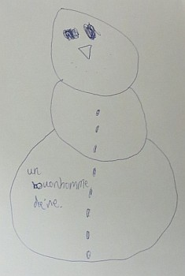
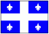

Ottawa, Ontario,
Cannada.
Lé 20 dé novembre, 1976.
Moussieu l'Rédacteu,
M'èrvélà dans eune aut' capitale - la quatrième dans mains d'trais s'maines; chutte fais ch'est la capitale du Cannada.
Lé temps est fraid, mais l'solé lit. J'vis Ottawa pour la preunmié fais dans l'mais d'novembre mil neu chent dgiex-neuf et j'ai d'la peine à penser qué chînquante-sept ans dé sont pâssés d'pis. La grand' difféthence entre chutte preunmié visite et chette-chîn est qué la preunmié fais i' m'avait prîns huit ou neu jours à travèrser la mé entre l'Angliétèrre et Halifax en Nouvelle Êcosse dans l'grand baté Empress of France dé la Compangnie Cannadgienne-Pacifique, et eune affaithe dé vîngt-quatre heuthes par train dé Halifax. Chutte visite actuelle s'est faite dans un coupl'ye d'heuthes des Êtats-Unis par avion, et l'viage dé Jèrri ichîn peut s'faithe aîsiement par avion dans l'mème jour. Y'a mains d'tchînze jours j'dêjeunnis en Jèrri et j'bu du thée en Améthique lé neuf du mais.

J'n'oublîthai janmais ma preunmié veue dé chutte belle ville d'Ottawa, couvèrte d'né, auve les jannes filles et garçons à patinner sus la glace dans ses pars, et des p'tits palais ou châtchieaux bâtis auve des carrés d'glaces et illuminés en d'dans auve des lantèrnes couleuthées qué nou viyait r'lithe lé travèrs des muthâles dé glace. Ch'tait comme si nou 'tait dans un aut' monde. Les maîsons d'Parlément, sus la hauteu, auve la haute Tour dé Paix dans l'mitan tchi sembliait dominner l'êtendue d'maîsons auve lus liefs couvèrts dé né comme si ch'tait pour lus ramémouaither qu'ou présidait l'Parlément du pays, ornaient la capitale.
La ville a grandi dépis chu temps-là. Pour mé, oulle a pèrdu un mio d'san charme. Auve les hauts bâtisses en forme d'"gratte-ciel" tch'ont fait lus appathence ichîn et là, aussi bin dans l's envithons des Maîsons d'Parlément comme un mio par toute sé êtendue, ou pathaît à ch't heu comme un tas des grandes villes dé l'Améthique du Nord.
Y'a chînquante-sept ans, i' n'y avait pon fort dé motos par les c'mîns et ses rues 'taient embellies par des traînés halés par des bieaux grands j'vaux atout des cliochettes sus lus graiements qué nou ouiyait comme un doux son d'mûsique dans la distance. Les traînés n'faîsaient pon d'brit en drissant sus la né dans les rues, et les gens assis d'dans 'taient abriés contre la fraid atout des grand' câsaques dé pé d'ourse, et des couvèrtuthes dé laine et d'pé d'annimaux, l'tou d'ieux et sus lus g'nouors, les gardaient cauds. Tout ch'là a dispathut à ch't heu, et les rues sont encombrées d'motos et l'odeu des vapeurs dé gaz d'êcappage empouaîsonne l'air comme dans toutes les grandes villes du monde.
Les changements n'm'empêchement pon quand-mème d'aver eune amiêtchi toute spéciale pour la capitale du Cannada. J'y pâssis les trais preunmiéthes années d'ma vie dans l'Nouvieau Monde auprès la dgèrre dé 1914-1918. Man fréthe Sydney et ma soeu emily et lus êfants et p'tits-êfants y d'meuthent. I' y'a don pus d'Feuvres à Ottawa qu'ès Landes à St. Ouën d'nouos jours. Man p'pèe et ma m'mèe sont au r'pos êtèrnel dans iun d'ses chînm'tchiéthes. Ma couôsinne Hilda L'Gros, née Le Feuvre, fille dé m'n oncl'ye Ph'lippe (fréthe dé Manman L'Feuvre) et d'ma tante Mélie, tchi soulaient d'meuther dans Great Union Road à St. Hélyi et qu'j'allais vaie en ville quand j'tais mousse, est en r'pos dans l'mème chînm'tchiéthe. Nou peut don dithe qué mes visites ont l'caractéthe d'un pélérinnage.
La population du Cannada a changi étout. Sa Reine est nouot' chiéthe Reine d'Angliétèrre, mais sa populâtion n'est pus seulement Angliaîche et Française. Y'a des gens dé quâsi toutes les nâtions dans l'pays et les Français-Cannadgiens d'la Provînce dé Tchubec ont peux d'pèrdre lus identité et lus langue viyant tch'i' sont entouothés d'provînces Cannadgiennes et d's Êtats-Unis tchi pâlent l'Angliais.

Pour lé moment, chutte tchestchion d'langue et d'identité est hardi sus l'tapis viyant qu'eune portion d's habitants d'Tchubec veulent lus s'pather du gouvèrnément "fédéral" du Cannada et s'prononcer nâtion Française et îndépendante. Mais i' pathaît qué si l'affaithe fûsse mînse ès vouaix d'touos l's habitants d'Tchubec qué la grande mâjorité es'sait contre telle sépathâtion. Mais comme nouos l'dit l'vièr diton: "La fîn du temps f'tha tout vaie!"
Enfîn lé Cannada 'tait La Côte pour les Jèrriais d'man janne temps, mais ch'tait dans un p'tit coin du pays, La Gaspésie, dans la Provînce dé Tchubec, tchi s'èrnardaient à travailli pour les Robîns, les Boutillièrs et les Früings. I' n'y'a pon fort dé Jèrriais là à ch't heu tch'ont 'té nés en Jèrri, et lus d'scendants sont hors ailleurs ou mêlés parmi les Français-Cannadgiens. Nou n'peut don pas appeler La Côte eune colonnie Jèrriaise, mais les tombieaux dans ses chînm'tchiéthes Anglyicans sont ornés auve les noms d'ses fondateurs - des noms d'fanmil'yes Jèrriaises tchi dispathaîssent à grands pas, mème dans lus île natale!
George d'La Forge
Viyiz étout:
{kind=link}